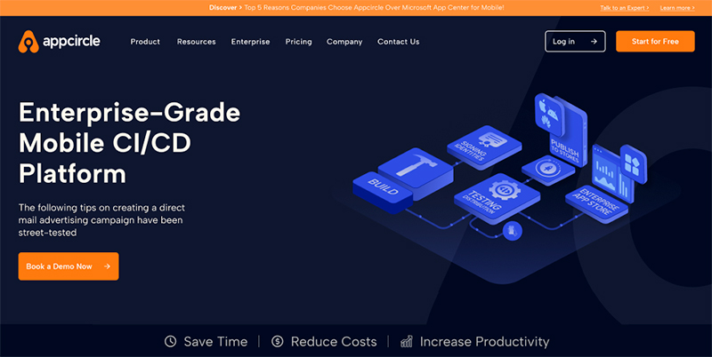

Appcircle Website Design
Enterprise Mobile CI/CD Automation PlatformAutomate your mobile app build, testing, signing, and publishing workflows for iOS and Android — all from a single, scalable dashboard designed for teams of any size.
Responsibilities: Designed all UI screens for a web-based SaaS platform, ensuring a consistent and scalable interface system. Led the UX design process, focusing on usability, clarity, and efficient workflows in a complex technical environment. Created visual assets, including illustrations and interface elements, aligned with the platform’s brand identity
Appcircle Web Site Figma Design File

Technical Scope (B2B Platform)
Platform Type:Web-based SaaS platform for enterprise mobile app CI/CD automation (B2B). Supported Platforms:iOS and Android applications with full build, testing, signing, and publishing workflows. Core Functional Modules: Dashboard & Analytics: Monitor build pipelines, app status, and team activity. Project & Workflow Management: Create, configure, and automate build and deployment pipelines. User & Team Management: Roles, permissions, and collaboration tools for development teams. Integration & API Support: Connect to external tools (e.g., GitHub, GitLab, Slack) and CI/CD pipelines.